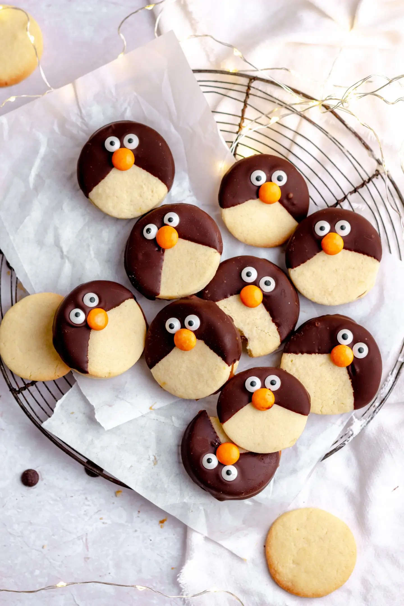

Receita de Biscoitos de Pinguim

Ingredientes
- 200g de manteiga amolecida
- 100g de açúcar
- 1 ovo
- 300g de farinha de trigo
- 50g de chocolate em pó
- 200g de chocolate meio amargo (para cobertura)
- Confeitos brancos e pretos para decorar
Instruções
- Preaqueça o forno a 180°C e forre uma assadeira com papel manteiga.
- Em uma tigela, misture a manteiga e o açúcar até obter um creme claro e fofo.
- Adicione o ovo e misture bem.
- Em outra tigela, peneire a farinha e o chocolate em pó, depois incorpore aos poucos na mistura de manteiga.
- Forme bolinhas de massa e achate-as levemente, colocando-as na assadeira.
- Asse por 12-15 minutos, até os biscoitos estarem firmes, mas ainda macios ao toque. Deixe esfriar.
- Derreta o chocolate meio amargo em banho-maria ou no micro-ondas.
- Mergulhe a parte de cima de cada biscoito no chocolate derretido e deixe secar sobre uma grade.
- Use os confeitos brancos para fazer os olhos e os pretos para as patas dos pinguins.
- Deixe os biscoitos esfriarem completamente antes de servir.
Voltar